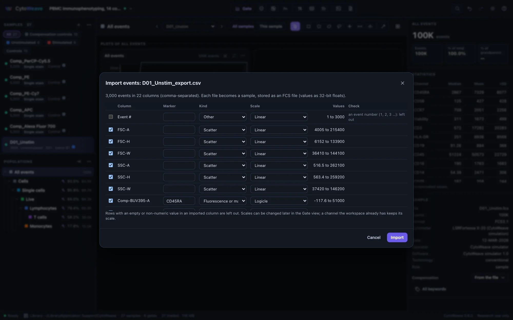
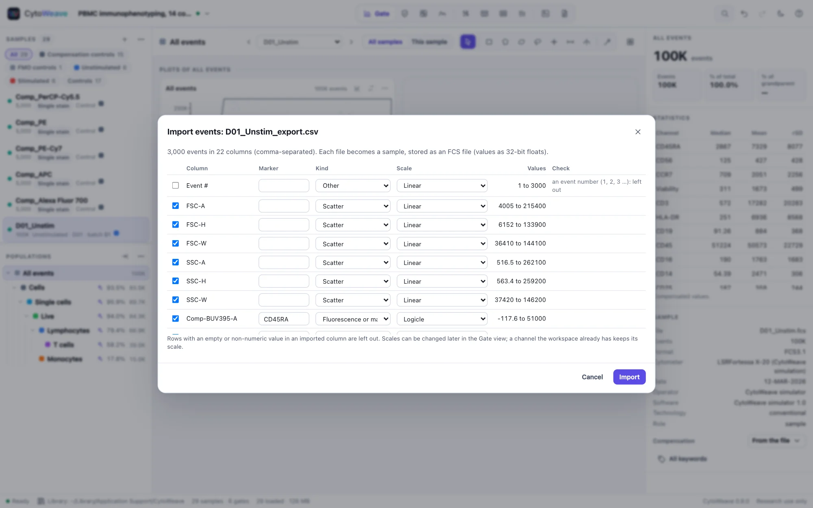

Opening data
Bring FCS files into a workspace, organize them into groups, describe the experimental design, and mark the controls.
What CytoWeave opens
| File | Opens as |
|---|---|
.fcs, .lmd | Samples. FCS 2.0, 3.0, 3.1 and 3.2; integer, float, double and ASCII data. A file with several data sets becomes one sample per data set. |
| A folder | Its FCS files, as a sample group named after the folder |
.cwz | A CytoWeave workspace |
.acs, .zip | An Archival Cytometry Standard container: a workspace with its FCS files |
.wsp | A FlowJo 10 workspace; see FlowJo, FACSDiva and Gating-ML |
.flowjo | A FlowJo 11 workbench; see FlowJo 11 workbenches |
.Expt | A SpectroFlo experiment: its reference controls, set up in the Spectral view; see The workflow |
.xml | Gating-ML 2.0 gates and compensation, or a FACSDiva experiment exported as XML (FACSDiva experiments) |
.csv, .tsv, .txt | Events, a row per event and a column per channel (below); or, when the first column names samples, sample annotations: the other columns become fields; or a plate layout, by well (Plates) |
.svg, .png, .pdf | A figure CytoWeave exported: where it came from, what changed since, and a rebuild; see Opening an exported figure |
Drag files onto the window, use the + button of the sample list (Add FCS files…, Add a folder of FCS files…), press ⌘O, or name them on the command line.
The program keeps one copy of each FCS file in your library, under its SHA-256 checksum, so the workspace keeps working when the originals are moved or renamed. See Workspaces.
Events in CSV files


A CSV of events (a row per event, a column per channel, numbers in every column including the first), as FlowJo's Export CSV, FCS Express, R, Python and some instruments write it, opens in a dialog that checks every column before anything is imported:
- The file's format: comma, semicolon or tab separated, with decimal points or commas, with or without a header row. FlowJo's headers (
Comp-PE-A :: CD25) give the channel and its marker. - Each column's values: their range, cells that are not numbers (with the row of the first), empty cells, rows of the wrong length, the same value in every row.
- An event number column (1, 2, 3 …) is left out. A column of a few whole numbers is recognized as labels, such as clusters or sample numbers, and can split the file into one sample per value (a file that concatenated several samples, for example).
- Each column's kind (scatter, fluorescence or mass, time, other) and scale are guessed: logicle for intensities, arcsinh with cofactor 5 for mass cytometry counts, linear for scatter and time, and linear over their range for values that are already transformed (small, often negative values, as arcsinh or log values are). Change any of them before importing; a channel the workspace already has keeps its scale.
Each file becomes a sample, stored in the library as an FCS file of 32-bit floats (as FCS files hold values; about seven significant digits), so it is checksummed, saved and analyzed like any other. Rows with an empty or non-numeric value in an imported column are left out and counted. Several files with the same columns are imported together. The validation suite reads CytoWeave's own CSV export and FlowJo's format back exactly, and a damaged file's faults are each reported.
Files that bend the standard
FCS files from real instruments often bend the standard, and CytoWeave reads them anyway. Every repair is listed in the Sample section of the inspector, so nothing is silently changed:
- text that is neither UTF-8 nor Latin-1;
- offsets that disagree or are off by one;
- truncated data or a missing event count;
- log-amplified integer data.
Files that cannot be read are refused with a message saying why. Spillover is read from $SPILLOVER, SPILL, $SPILL or $COMP. All keywords in the inspector shows every keyword of the file.
Selecting and grouping samples
Click a sample to show it. ⌘-click adds samples to a selection and ⇧-click selects a range; the ⋯ menu of the sample list then acts on the selection:
- New group from selection… and Add selection to group. Groups appear as chips above the list; click a chip to show only its samples, and right-click it to rename, recolor or delete the group.
- Annotate selection… opens the annotation table (below).
- Set role marks samples as Sample, Unstained, Single stain, FMO, Isotype, Beads or Reference.
- Compensation chooses the matrix the samples use: the file's own, none, or one of the workspace's matrices.
- Load every sample reads all samples into memory now rather than when first shown.
- Remove selection from workspace. The FCS files stay in the library, and you can undo it.
Annotating the design
Annotations describe the experimental design, and CytoWeave uses them everywhere: comparisons group samples by them and pair them by subject, CytoNorm reads the batch from them, and the methods paragraph describes them.
- Select the samples, then choose Annotate selection… from the sample list's menu.
- Click Suggest from file names. Each part of the names that differs between samples becomes a field (condition, subject, batch, timepoint…) filled with its values. Check and correct them.
- Type into any cell, or click Add field for your own (donor, dose, tissue…), then Save.
The suggested fields are condition, subject, batch, timepoint, tissue, treatment, replicate, plate and well. To annotate many samples at once from a spreadsheet, save it as CSV or TSV with the sample or file name in the first column and open it like any other file (or Workspace → Sample annotations (CSV)…).
Use subject for paired designs. When the same donor appears in each group, Compare pairs samples by the subject field and chooses a paired test.
Marking controls
Every sample has a role. Controls (unstained, single stain, FMO, isotype, beads) are listed under their own chips, left out of QC, tables and comparisons unless you include them, and used where they belong. Reference samples are analyzed like samples and also anchor batch normalization:
| Role | Used by |
|---|---|
| Single stain, Beads | Compensation from controls and reference spectra |
| Unstained | The negative reference of compensation, and autofluorescence in spectral unmixing |
| FMO, Isotype | Setting gates: overlay them on a sample's plot |
| Reference | Anchor samples for batch normalization |
The examples come with their roles set. With your own files, select the controls and use Set role; the Compensate and Spectral views then let you choose each single-stain control's stained channel.